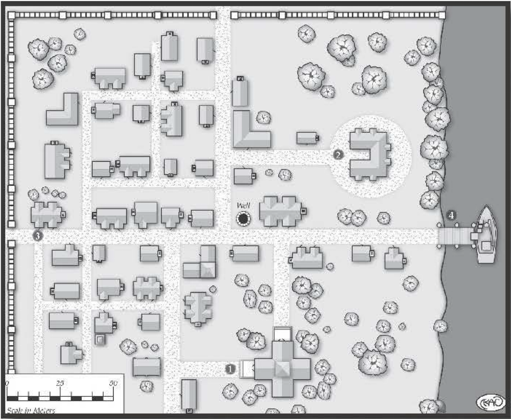

Kiselton, Riverside Town¶
Nestled upon the banks of the Durbin River is the town of Kiselton. With a population of over 1,000, it’s a booming trade center that relies upon its salt mines as a chief source of revenue. Like most settlements of its size, Kiselton has a ruling council and a mayor to perform the civic duties, such as appointing a sheriff, negotiating trade agreements, and collecting the taxes required to maintain the town’s dock, roads, defensive walls, and government buildings. Over the years, Kiselton has done well, attracting laborers to work in the mine for wages seldom seen in smaller villages or warrens. Along with the opportunity for greater earnings comes a broad range of entertainment, attracting more residents with a variety of talents to the riverside town. Its ease of access makes it a popular stopping place for travelers, caravans, and various touring merchants.
The Salt Mines¶
Located northwest of Kiselton is the vast series of underground salt mines that have brought the town its rapid growth and wealth . Each year, several tons of salt are pulled from the earth and sold to smaller and larger cities, near and far. Although the work is wretched and dangerous, it’s the lifeblood this thriving riverside settlement. The recent deaths of miners have forced Mayor Garvin Belot to place city guards inside and outside the mines. No one in Kiselton is sure what or who is killing the workers, but the talk in the taverns is that a monster is lurking about, feeding upon warm flesh.
Such rumors do not sit well with the mayor, or the ruling council. At every opportunity, all town officials deny claims of monsters; instead, they place the blame on rogues, claiming that soon a band of brave souls will arrive and offer to rid the town of the “bandits.” These so-called heroes are the true perpetrators, and the members of the council anticipate their arrival.
Rumors of War¶
Perhaps council members have hired ruffians in an attempt to oust the firmly planted mayor. Or maybe they hired toughs, but there’s also a monster prowling about. However, should the players’ characters hear the rumors and offer to help, the mayor doesn’t hesitant to have the sheriff arrest them, and he proclaims he has captured the villains responsible for the deaths, hoping to keep the favor of the people.
The Town¶
With wealth often comes a fear of losing that wealth. As Kiselton started to prosper, one of the first undertakings of the ruling council was to construct defensive walls around the town, leaving only the riverfront open. Each wall has a guarded gate, which is normally open during daylight hours. During the night, the gates are closed, though the guards remain. Gaining entry to the town is much more difficult at night, as the guards carefully inspect all who wish to enter.
Here are a few of the locations with the town, but there’s plenty of other places that weren’t visited during a visit not too long ago. As things hardly ever change in these little places, it’s likely that other visitors will find the sights familiar from these descriptions.

Locations in Kiselton¶
Government House (Mayor ‘s Abode): This luxurious manor was one of the first town structures to be erected. Beautifully tended, old hardwood trees surround the structure, providing plenty of shade for the three flagstone patios situated on the north, west, and south sides of the building. Standing two stories, constructed of stone and mortar, the Government House is the location for council meetings and trade negotiations with merchants and emissaries from neighboring cities.
Garvin Helot, Mayor: Agility 2D, dodge 3D, stealth 3D, Coordination 2D, lockpicking 2D+1, Physique 2D, Intellect 2D, cultures 2D+1, reading/writing 2D+1, scholar 3D+2, speaking 3D+1, trading 3D+2, Acumen 2D, hide 3D, streetwise 4D, Charisma 4D, bluff 4D+1, charm 4D+1, persuasion 4D+1. Advantages: Authority (R2), mayor, Move: 10, Strength Damage: 1D, Fate Points: 0, Character Points: 2, Body Points: 16, Equipment: clothes; coins; keys to Government House.
Temple: Kiselton’s temple rivals the Government House in size and beauty. Entirely built at the cost of the temple’s followers, it’s another of town’s prominent structures. Not only does it serve as a house of worship for the locals, it also provides boarding for its growing number of clergy. Presently, the temple houses 15 priests, but it’s capable of rooming twice that number.
Ladira Almer, Head Priestess: Agility 3D, fighting 3D+1, melee combat 4D, Coordination 2D, Physique 2D, Intellect 3D+1, cultures 3D+2, reading/writing 3D+2, scholar 4D, speaking 4D, Acumen 3D, search 3D+1, Charisma 3D, mettle 4D+2, Extranormal 2D, divination 2D+2, favor 4D, strife 4D. Advantages: Authority (R1), religious leader; Equipment (R1), special holy symbol, Disadvantages: Devotion (R3), to religion; Employed (R3), must follow sect’s regulations, Move: 10, Strength Damage: 1D, Fate Points: 0, Character Points: 2, Body Points: 16, Equipment: robes; holy symbol (provides +2 bonus to divination, favor and strife skill totals); quarterstaff (damage +1D+2).
Typical Acolyte: Agility 2D, melee combat 3D, Coordination 2D, Physique 3D, Intellect 3D, reading/writing 3D+1, speaking 3D+1, Acumen 3D, investigation 3D+2, Charisma 3D, mettle 3D+1, Extranormal 1D, divination 2D, favor 2D+1, strife 2D+2. Disadvantages: Devotion (R1), to religion; Employed (R1), must follow sect’s regulations, Move: 10, Strength Damage: 2D, Fate Points: 0, Character Points: 2, Body Points: 11, Equipment: robes; holy symbol; quarterstaff (damage +1D+2).
Durbin River Inn: This inn existed years before the city walls were erected around Kiselton. It’s a favorite haunt of the riverboat crews and road-weary travelers. Its sturdy wooden frame stands three stories high, and it has 20 rooms, varying from cramped and windowless on the lower floors to large and brightly lighted on the top floor. As with most settlements, the local inn is a locus of rumors, gossip, and shady deals.
Renting a room at the Durbin River Inn varies in price with the quality of the room. Cramped, single bed rentals are Very Easy (10 copper pieces), while large two-and three -bed suites are Moderate (four go Id pieces). Jurin is not fastidious when it comes to cleaning the cheaper rooms. Dust and discarded material are included in the low-budget rentals, and the bedding is crawling with lice. These extra amenities are not found in the upper, more expensive suites.
Jurin Coram, Inn Keeper: Agility 2D, riding 2D+2, Coordination 2D, Physique 2D, stamina 3D+1, Intellect 2D, cultures 2D+1, trading 4D, Acumen 2D, streetwise 3D+2, search 4D, Charisma 3D, bluff 4D, charm 3D+1, persuasion 3D+1. Move: 10, Strength Damage: 1D, Fate Points: 0, Character Points: 2, Body Points: 16, Equipment: clothes; pipe; small knife (damage +2).
Ori Swifthand, Inn Regular: Agility 3D, riding 3D+1, Coordination 4D, lockpicking 4D+1, sleight of hand 4D+1, throwing 4D+1, Physique 3D, Intellect 2D+1, cultures 2D+2, Acumen 2D+2, hide 4D+1, streetwise 4D+2, search 3D, Charisma 3D, bluff 3D+2, charm 3D+1. Disadvantages: Enemy (R1), suspected of being a footpad and watched carefully by the mayor, Move: 10, Strength Damage: 2D, Fate Points: 0, Character Points: 1, Body Points: 19, Equipment: clothes; cloak; bag of pepper (+1 to difficulties for animals using track); lockpicking tools (+1D to lockpicking rolls; throwing dagger (damage +1D); stiletto (damage +1D); soft leather boots (+1 to stealth totals).
Dock: While commerce is readily conducted by road, it’s much easier by water. This is truer when transporting heavy loads of salt. While many of the neighboring settlements haul the precious mineral by horse, along the rutted roads leading to and from Kiselton, the larger cities use riverboats, carrying vast cargos of salt to be resold to even more distant locations. As a result, the dock has become an essential part of the town’s economic success. It’s not difficult to hitch a ride on one of the river boats - for a small fee paid to the captain, naturally.
Typical Dock Worker: Agility 3D, fighting 4D, melee combat 4D, Coordination 2D, pilotry 3D+1, Physique 4D, lifting 5D, running 4D+1, stamina 5D, Intellect 3D, Acumen 3D, gambling 3D+1, hide 4D, streetwise 4D, Charisma 3D, bluff 3D+2. Move: 10, Strength Damage: 3D, Fate Points: 0, Character Points: 0, Body Points: 12, Equipment: clothes; small knife (damage +2); heavy garments (Armor Value +1).
Rumors¶
All who spend an evening at the inn are likely to hear numerous rumors. The gamemaster can use the following table for determining random rumors, decidingwhichistrueandwhicharenot . Amend the table to suit the needs of an existing adventure, if desired.
A clandestine band of thieves practices their trade in town. They identify each other and communicate through secret gestures.
The mayor is planning on expanding the dock. The ruling council had a private meeting. They intend to purchase the houses along the river before announcing the plan, so that they can buy the property at a low price.
The priestess at the temple is an excellent healer. It’s said she came here from a distant city, hiding from the elders of her order for a crime she committed.
Monsters did not kill the mineworkers! The mine foreman had them murdered to slow the production of salt. The foremen have been secretly mining it and selling on their own.
The mines run deep into the earth. Something has been disturbed there, something that should not have been awakened.
The bard Selwyn of Burch knows many histories of Kiselton and the local lands. Often he visits the inn, regaling customers with forgotten tales and delightful songs.